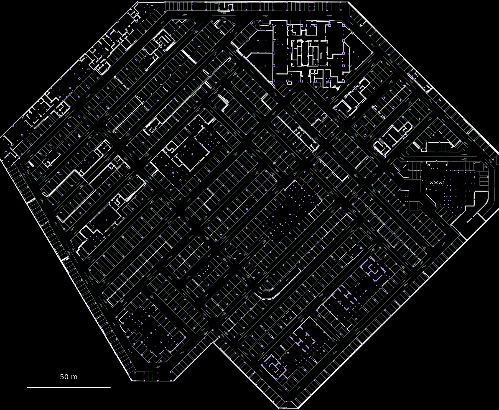
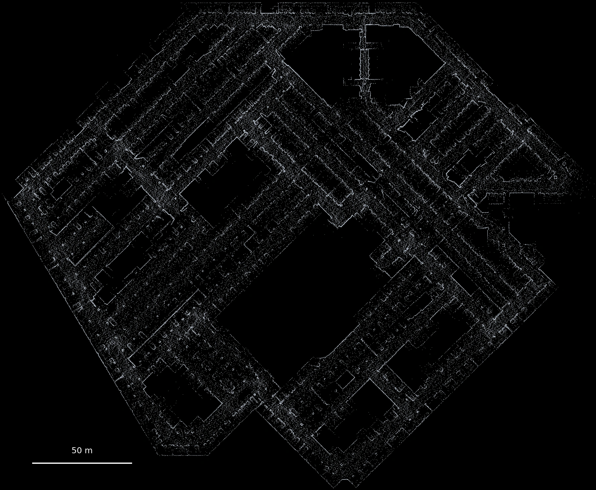

Incomplete measurements
Associate wall observations across height windows using unique source voxels, rather than treating each projection as independent evidence.
From field evidence to semantic CAD
Joint Structural Reconstruction From LiDAR and Design CAD for Underground Parking Garages
Measured geometry meets design intelligence.
Recover structures. Preserve their evidence.
Research manuscript Source release v0.1.0
Interactive comparison · ICPARK
Select a comparison, then drag the divider.
Complete reconstruction stays on the right.


LiDAR point cloudComplete reconstructionFull-scene views are qualitative illustrations from the manuscript source data; quantitative scores use the annotated evaluation regions. The design view retains the archived initial registration, before local correction, and its red circles mark matched design--field discrepancy regions.
01 The problem & core idea
Vehicle occlusion and uneven LiDAR coverage fragment observed walls. Design CAD supplies a useful structural prior, but can retain outdated or misplaced geometry. Simply overlaying the two may preserve errors or close passages that should remain open.
Associate wall observations across height windows using unique source voxels, rather than treating each projection as independent evidence.
Use design directions to regularize measured walls, then let reliable observations update supported design intervals.
Require observed anchors, design continuity, and conflict checks before turning a missing interval into an inferred connection.
Industrial digital twins and intelligent facility management require traceable spatial information that reconciles field measurements with engineering designs. In underground parking garages, this information must integrate structural and functional elements despite design discrepancies and incomplete observations. Design drawings may retain outdated structures, whereas vehicle occlusion and uneven laser-scanning coverage fragment observed walls and obscure connections. Simply combining these sources can therefore preserve incorrect geometry or close open passages. This paper presents LiDAR2CAD, which couples joint structural reconstruction with facility-layer mapping to produce multilayer semantic computer-aided design maps. Unique voxels associate observations across heights. Design directions constrain wall fitting, reliable observations update supported design intervals, and observed anchors, design continuity, and conflict checks guide missing-structure recovery. Parking spaces, lane markings, and directional arrows are mapped from design layers. The output distinguishes observed geometry, conditional inference, and unverified design retention. Experiments on four ICPARK evaluation regions achieve wall and connection F1 scores of 86.44% and 92.31%, respectively. Controlled comparisons support the benefit of bidirectional correction, and three additional facilities show improvements over design-only reconstruction. These results support traceable structural recovery, while large design discrepancies and difficult regions remain challenging.
02 Method
LiDAR2CAD operates after mapping and global alignment. Its structural reconstruction couples measured geometry and design priors without treating all retained geometry as equally verified.
Overlapping thin and thick height windows expose different structural evidence. Position, orientation, and height persistence associate observations into objects, with unique voxel ownership preventing repeated support counting.
Design directions constrain wall fitting. Accepted updates must improve residuals on the fixed source voxels within bounded displacement. Reliable observations then refine the locally supported design intervals.
Missing structure is inferred only when observed dual anchors and design continuity support it. Opening, column, crossing, and endpoint checks arbitrate competing hypotheses.
Regularize measured wall directions while checking the original evidence.
Correct the prior where measurements provide reliable local support.
03 Interactive explorer
Select an evaluation region to compare the same local crop across the four stages. These are the manuscript’s original region panels, not synthetic illustrations.
eva-01 · Wall F1: 97.75% · Reference wall length: 18.29 m.
04 Main evidence · ICPARK
At a 0.10 m matching tolerance, the full method reaches 86.44% wall F1 across four evaluation regions—33.30 percentage points above CAD-only and 15.03 points above a shared-front-end overlay.
Length-weighted · four-region aggregate
42 true positives, 3 false positives, and 4 missed connections yield 92.31% connection F1.
A geometric crossing count, not a blocked-area or robot-traversability measurement. No explicit connection is assigned across these open intervals.
| Method | Precision (%) | Recall (%) | F1 (%) | FP length (m) | FN length (m) |
|---|---|---|---|---|---|
| CAD-only | 53.14 | 53.13 | 53.14 | 120.40 | 124.87 |
| Non-shared front end | 40.21 | 53.08 | 45.76 | 259.80 | 125.00 |
| LiDAR-only | 84.00 | 55.00 | 66.47 | 28.80 | 119.89 |
| Shared-front-end overlay | 65.85 | 78.00 | 71.41 | 149.20 | 58.61 |
| One-way correction | 85.00 | 78.00 | 81.35 | 39.75 | 58.61 |
| LiDAR2CAD (full) | 87.95 | 84.98 | 86.44 | 31.88 | 40.00 |
The paper also compares seven classical extraction baselines. Column-boundary F1 is 93.59% for the full method, versus 70.00% for CAD-only, 76.86% for LiDAR-only, and 81.96% for overlay.
05 Mechanism & ablation
With identical objects and source voxels, bidirectional correction raises observed-wall F1 from 74.46% to 78.20% over one-way correction.
Dual anchors increase correct connections from 33 to 42. The smaller wall-F1 difference shows why geometric coverage alone is insufficient.
Conflict checks reduce false connections from 16 to 3, trading some recall for greater structural consistency.
| Configuration | Wall F1 (%) | Δ F1 (pp) | CONNECT TP / FP / FN | OPEN crossings |
|---|---|---|---|---|
| Full method | 86.44 | — | 42 / 3 / 4 | 1 |
| No reverse update | 81.35 | −5.09 | 37 / 6 / 9 | 3 |
| No design-direction constraint | 79.89 | −6.55 | 35 / 7 / 11 | 3 |
| No dual-anchor condition | 84.81 | −1.63 | 33 / 3 / 13 | 1 |
| No unverified-design retention | 84.42 | −2.02 | 42 / 3 / 4 | 1 |
| No conflict checks | 83.70 | −2.74 | 43 / 16 / 3 | 7 |
Retaining unverified design mainly supplements geometric coverage: removing it leaves the connection counts unchanged. The reported ablations do not separately isolate cross-height association or voxel deduplication.
06 Additional facilities & sensitivity
Three additional facilities show wall-F1 improvements over design-only reconstruction. These are facility-level structural evaluations; they do not establish independently surveyed facility-layer accuracy or frozen-parameter transfer.
| Facility | CAD-only wall F1 (%) | Joint wall F1 (%) | Gain (pp) | Connection F1 (%) | OPEN crossings |
|---|---|---|---|---|---|
| A | 66.00 | 83.95 | +17.95 | 92.44 | 1 / 30 |
| B | 62.00 | 81.42 | +19.42 | 89.74 | 2 / 40 |
| C | 64.00 | 82.42 | +18.42 | 89.80 | 1 / 25 |
07 Traceable multilayer output
Structural provenance is kept separate from presence and visibility. An inferred segment is not relabeled as observed, and a retained design segment is not silently promoted to verified field geometry.
Wall and column geometry associated with field observations and their source evidence.
Missing structure accepted using anchor support, design continuity, and conflict checks.
Design geometry preserved without sufficient observation support, carrying an explicit uncertainty distinction.
Parking-space outlines, lane markings, and directional arrows are mapped from design layers into the shared global frame. Wall structures additionally undergo local correction.
Functional layers do not drive structural fitting and are not included in the reported wall and column scores. Their local field agreement remains unverified in the reported evaluation.
08 Evaluation protocol & boundaries
ICPARK is an underground parking garage in Chengdu, China, acquired with an Ackermann platform carrying LiDAR, IMU, and wheel odometry. The data contain 10,742,193 raw points, 4,720,223 cleaned points, and 4,548,561 unique voxels.
Two development regions and four evaluation regions use 20 × 20 m cores with 5 m context. The reference includes 82 wall entities (266.412 m), 83 column-boundary fragments (148.336 m), 46 connections, and 27 open intervals. After 0.10 m endpoint trimming, 23 open intervals are evaluable; four undecided relations are excluded. References are manually corrected from fused geometry, not an independent survey.
Wall and column precision, recall, and F1 are length-weighted, with a primary 0.10 m matching tolerance. Additional wall-F1 results are 77.53% at 0.05 m and 92.19% at 0.15 m.
Connection matching is one-to-one, using 0.10 m endpoint/host tolerance and a 12° direction tolerance. Open-interval crossings are line-geometry checks, not physical traversability tests. Geometry, connectivity, and provenance answer different questions and should not be conflated.
The reported median post-initialization runtime is 464 s across three same-hardware trials (range 445–483 s), with 2.20 GiB median peak memory. The stages take 420 s for bidirectional correction, 40 s for regularization, and 4 s for export.
This timing excludes SLAM, training, semantic inference, initial extraction, and ray processing. Hardware specifications are not supplied in the available result record, so these measurements are not an end-to-end or real-time throughput claim.
Numerical results on this page reproduce the current manuscript and its author-confirmed result import. Measurements were completed on another computer; the imported result package does not contain the underlying raw geometry and execution logs, and these measurements were not independently rerun for this website.
The available record does not establish frozen-parameter transfer at facilities A/B/C, a direct isolated ablation of voxel deduplication or cross-height association, or field-verified functional-layer accuracy. Large prior errors, ambiguous repeated surfaces, and difficult endpoint or conflict decisions remain limitations.
09 Open research resources
Full method, evaluation protocols, quantitative tables, and limitations.
Cross-height evidence, design coupling, conflict-aware topology, portable configuration, tests, and an executable synthetic demo.
15 lossless CSV tables, the original result-provenance JSON, manuscript table sources, and explicitly synthetic example geometry.
The downloads are bundled with this static page. No remote repository has been configured, and these local files have not yet been uploaded to a public host. The source archive includes the small demo dataset so its quick-start runs without a separate download.